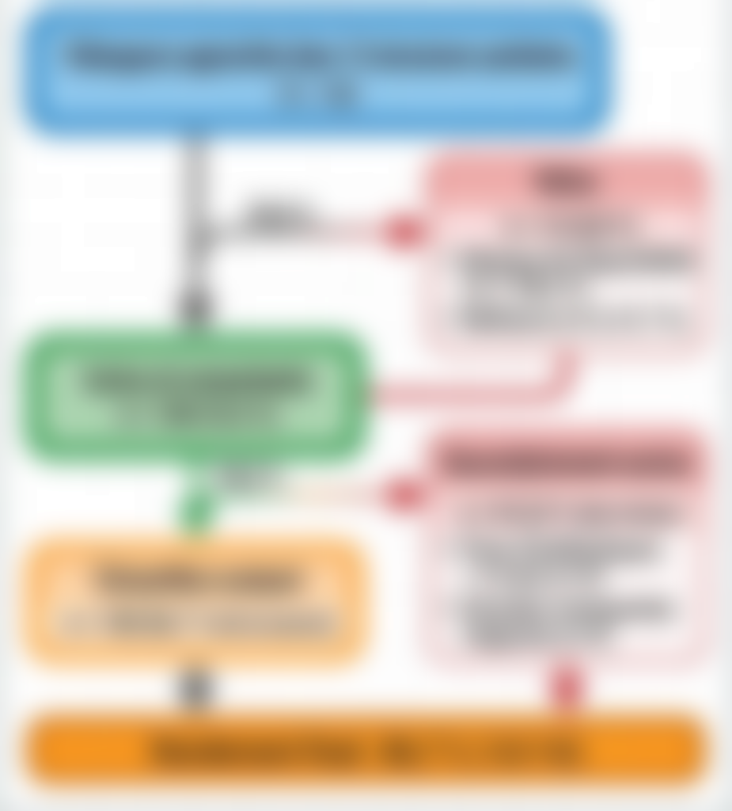

Résultats & analyses marquantesResults & selected analyses
Extraites de mes projets d'analyse de données (enquêtes CAP pour des thèses de doctorat et travaux du LFHV), ces visualisations illustrent concrètement mes compétences en biostatistiques et en modélisation.Drawn from my data-analysis projects (KAP surveys for PhD theses and LFHV work), these visualisations concretely illustrate my biostatistics and modelling skills.

Performance des modèlesModel performance
Projets en coursOngoing projects
Au-delà des travaux publiés, plusieurs projets actifs — en soumission, en analyse, ou menés sous confidentialité. Leurs résumés détaillés sont accessibles dans le coffre à code ci-dessous.Beyond published work, several active projects — under submission, in analysis, or conducted under confidentiality. Their detailed summaries are available in the code-protected vault below.
Le fardeau caché du SARS-CoV-2 en Afrique de l'Ouest (séroprévalence anti-NCP)The hidden burden of SARS-CoV-2 in West Africa (anti-NCP seroprevalence)
En soumissionUnder submissionQuantification du fardeau réel de la pandémie par la séroprévalence anti-nucléocapside.Quantifying the true pandemic burden through anti-nucleocapsid seroprevalence.
Dynamique des anticorps neutralisants anti-SARS-CoV-2Dynamics of SARS-CoV-2 neutralizing antibodies
En cours d'analyseUnder analysisCohorte béninoise — corrélats immunologiques et métaboliques.Beninese cohort — immunological and metabolic correlates.
Gastrites chroniques : systèmes OLGA & OLGIM (CNHU-HKM, 600 cas)Chronic gastritis: OLGA & OLGIM staging (CNHU-HKM, 600 cases)
3ᵉ auteurauthorEn soumissionUnder submissionÉtude rétrospective comparant les deux systèmes de stadification du risque précancéreux gastrique (système de Sydney modifié).Retrospective study comparing the two gastric precancerous-risk staging systems (modified Sydney system).
Profil génétique du cancer de la prostate (BRCA1, BRCA2, TP53, IL-6, IL-8)Genetic profile of prostate cancer (BRCA1, BRCA2, TP53, IL-6, IL-8)
En soumissionUnder submissionPolymorphismes dans une population hospitalière béninoise.Polymorphisms in a Beninese hospital population.
Dépistage du cancer de la prostate au Sud-Bénin (2023)Prostate cancer screening in southern Benin (2023)
En soumissionUnder submissionProfil épidémiologique et facteurs associés aux anomalies détectées.Epidemiological profile and factors associated with detected abnormalities.
🦟 Dengue — analyses de surveillance (LFHV)Dengue — surveillance analyses (LFHV)
En préparationIn preparationContribution à la caractérisation de la circulation du virus au Bénin (réseau sentinelles & dépistage communautaire).Contribution to characterising virus circulation in Benin (sentinel network & community screening).
🦠 Mpox — projets d'équipe (LFHV)team projects (LFHV)
En coursOngoingDiagnostic moléculaire RT-qPCR dans le cadre de la surveillance nationale (Africa CDC / OMS).RT-qPCR molecular diagnostics within national surveillance (Africa CDC / WHO).
🔒 Coffre des projets — accès par codeProjects vault — code access
Les résumés détaillés des projets en cours (contexte, méthodes, résultats réservés) sont chiffrés dans cette page (AES-GCM 256) : aucun contenu lisible n'y figure sans le code d'accès, communiqué sur demande à mes contacts professionnels. Le déchiffrement s'effectue localement dans votre navigateur — aucune donnée n'est transmise à un serveur.Detailed summaries of ongoing projects (context, methods, restricted results) are encrypted within this page (AES-GCM 256): no readable content exists without the access code, shared on request with my professional contacts. Decryption happens locally in your browser — no data is sent to any server.